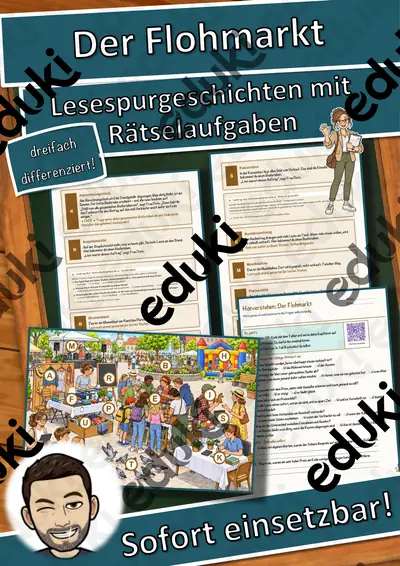
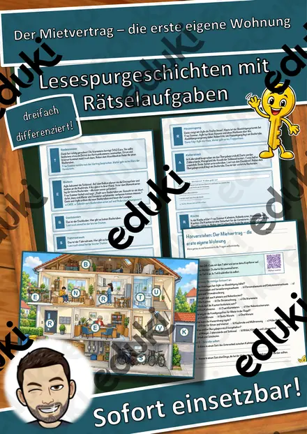
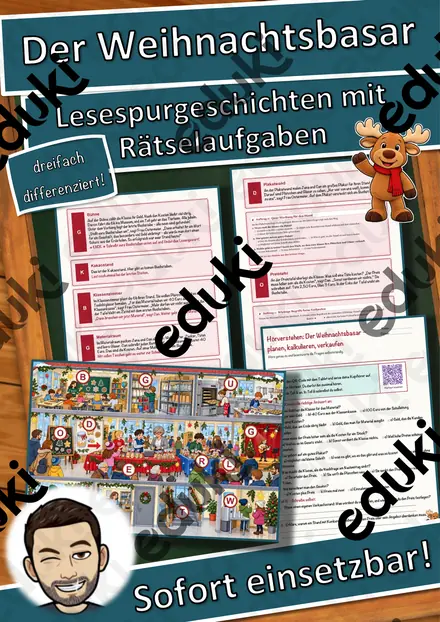
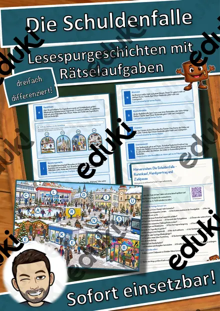
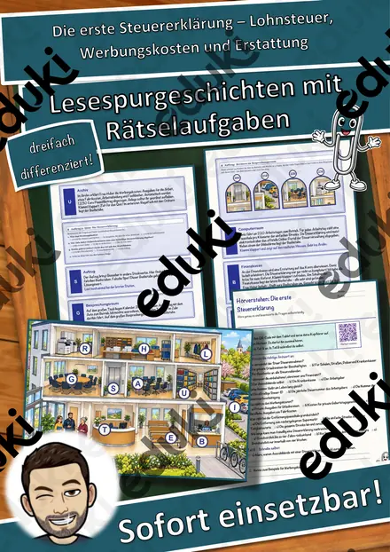
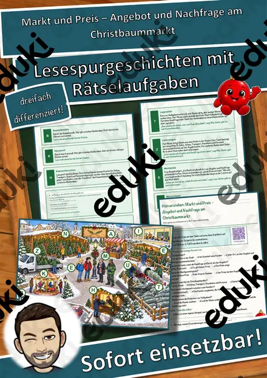
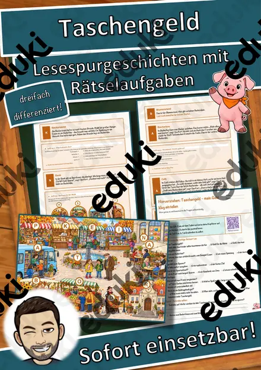

Der Flohmarkt – Lesespurgeschichte mit Rätselaufgaben (Klasse 7)

Der Mietvertrag – die erste eigene Wohnung – Lesespurgeschichte mit Rätselaufgaben (Klasse 9)

Der Weihnachtsbasar – planen, kalkulieren, verkaufen – Lesespurgeschichte mit Rätselaufgaben (Klasse 6)

Der Zukunftstag – Lesespurgeschichte mit Rätselaufgaben (Klasse 8)

Die Bank – Lesespurgeschichte mit Rätselaufgaben (Klasse 8)

Die Schuldenfalle – Ratenkauf, Handyvertrag und Zahlpause – Lesespurgeschichte mit Rätselaufgaben (Klasse 9)

Die erste Steuererklärung – Lohnsteuer, Werbungskosten und Erstattung – Lesespurgeschichte mit Rätselaufgaben (Klasse 10)

Markt und Preis – Angebot und Nachfrage am Christbaummarkt – Lesespurgeschichte mit Rätselaufgaben (Klasse 9)

Taschengeld – mein Geld klug einteilen – Lesespurgeschichte mit Rätselaufgaben (Klasse 3)
Lesespurgeschichten im Fach Wirtschaft
Die Stationen folgen einem Weg durch Betrieb, Markt oder Verwaltung. Wirtschaftliche Begriffe erscheinen dort, wo sie gebraucht werden, und bleiben deshalb hängen.
Jede Geschichte liegt in drei Niveaustufen vor, die sich in Textlänge, Satzbau und Aufgabenanspruch unterscheiden. Weg, Stationen und Lösungswort bleiben gleich, sodass alle Fassungen gleichzeitig in einer Klasse laufen können.
Themen auf dieser Seite
Beispiele aus dieser Sammlung: Der Weihnachtsbasar · Die erste Steuererklärung · Die Schuldenfalle · Markt und Preis · Taschengeld · Der Zukunftstag · Die Bank · Der Flohmarkt.